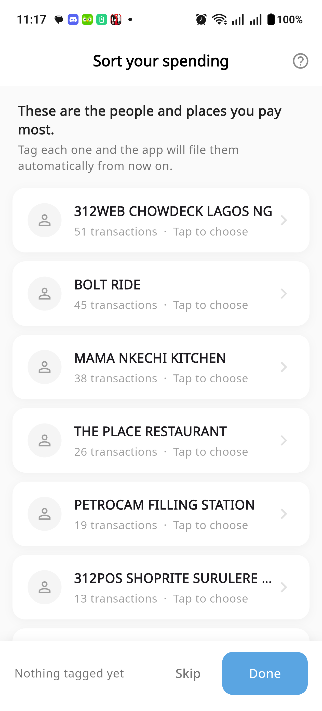

You should not have to sort a year of spending by hand, one transaction at a time.

Sorted by how often you paid them. The names that shaped your month sit at the top — and it never asks more than twenty.
No model, no network, nothing leaving the phone.